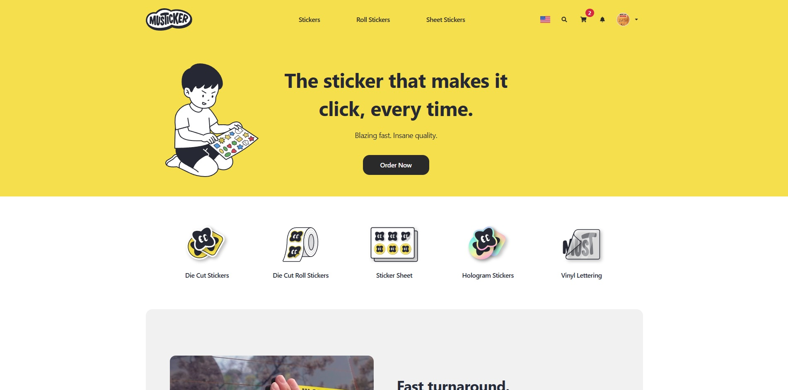
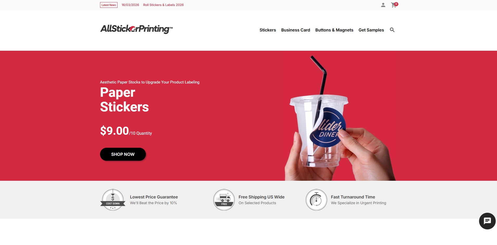
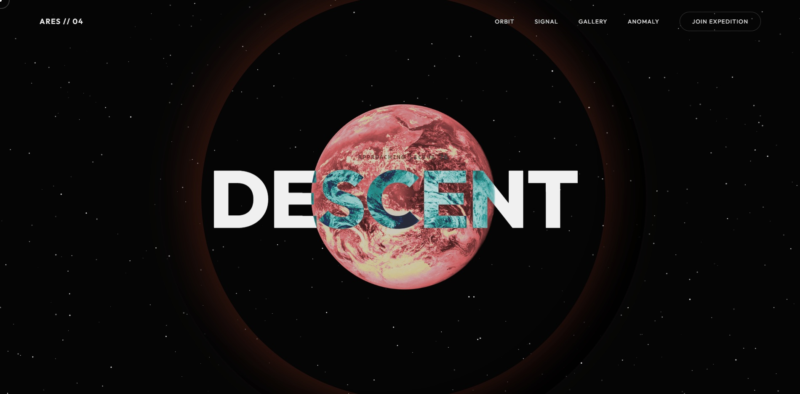
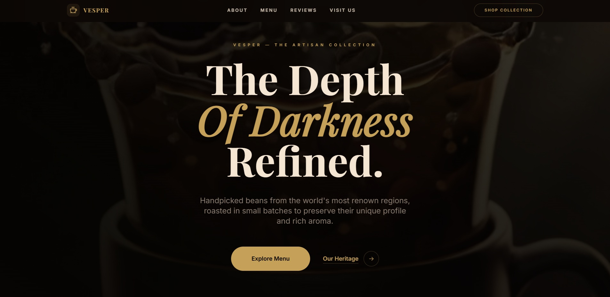
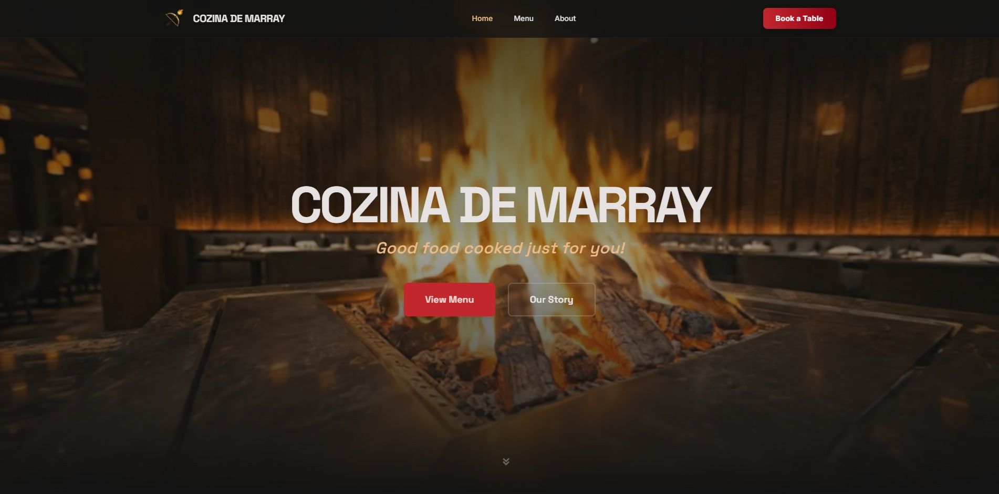
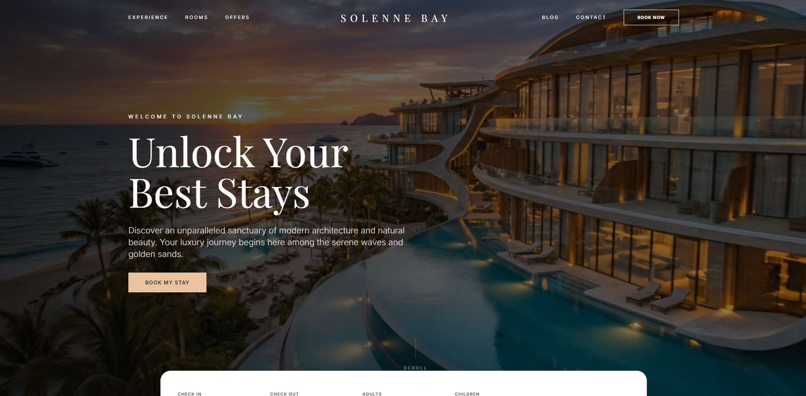
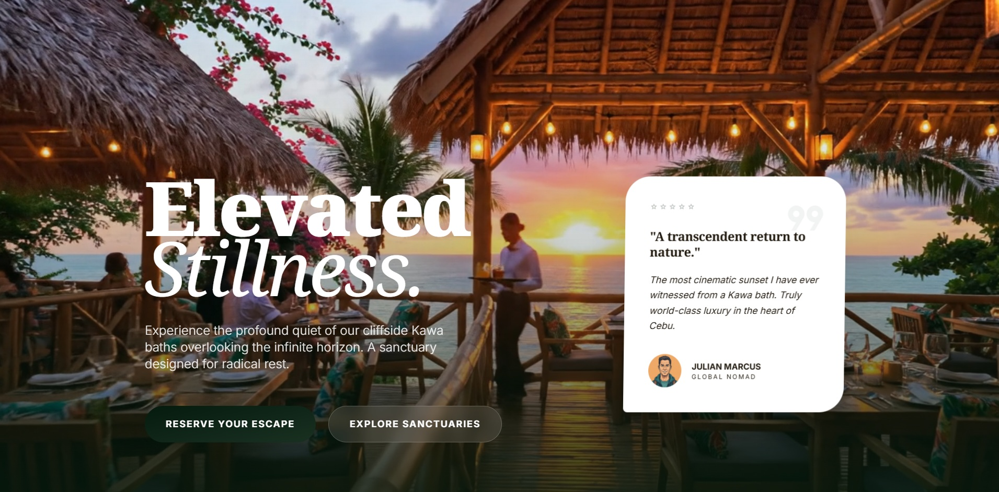

Frontend Developer
Glophics Web Design & Advertising
- Cebu City, Philippines
- SEO, accessibility, responsive systems
Frontend Developer / Interface Designer
I design and build high-performance interfaces that balance motion, readability, SEO, and product clarity.
Frontend-focused software developer in Cebu City with 4+ years of experience shipping responsive web applications, conversion-focused landing pages, multilingual storefronts, and maintainable UI systems.
Glophics Web Design & Advertising
Performance-driven UI engineering, REST API integration, and product interfaces built for scale.
Multilingual sticker storefront built from scratch with a cleaner architecture and upgraded frontend stack.
About Me
I am a frontend-focused software developer with strong experience in Vue.js, Nuxt.js, and React, building high-performance interfaces that stay fast, accessible, and practical in production.
My work spans marketing sites, e-commerce experiences, scheduling platforms, internal tools, and content-driven products where strong UX and maintainable frontend architecture matter just as much as polish.
I care about motion and interface quality, but never at the expense of clarity, usability, or speed.
Experience
Leading frontend architecture and performance engineering across a network of seven international storefronts, where I spearhead from-scratch builds like Musticker (EN/KR), optimize cloud-based asset delivery, and drive significant Core Web Vitals gains across the entire product ecosystem.
Engineered high-fidelity, performance-tuned interfaces and integrated complex RESTful APIs while accelerating team development velocity through modern modularity standards and a strict focus on mobile responsiveness and WCAG accessibility.
Delivered scalable frontend solutions for e-commerce and scheduling platforms, strengthening production reliability through targeted debugging and contributing to the design of resilient architectures capable of supporting rapid user growth.
Projects
A curated mix of product delivery, landing page design work, storefront support, and frontend experiments.
A new sticker commerce platform where I am building the frontend from scratch, modernizing the storefront structure and rolling out multilingual support for English and Korean.

Frontend support across seven related sticker printing storefronts, handling responsive fixes, localized merchandising updates, banner rollouts, and SEO-aware maintenance.

A cinematic Mars exploration landing page built around deep parallax layering, GSAP-driven scroll motion, and a more experimental editorial interaction style.

Experimental landing page exploring Mars through layered motion, atmosphere, and editorial pacing.
A premium coffee brand landing page with a high-contrast editorial look, artisan storytelling, and product-forward sections built around the ritual of specialty brewing.

Landing page concept focused on atmosphere, craft, and premium product storytelling.
A premium grill and bar concept mixing Cebuano culinary heritage with a modern editorial dining experience, rich campaign storytelling, and immersive menu presentation.

Restaurant landing page concept designed around culinary theatre, warmth, and premium dining cues.
A cinematic luxury resort landing page focused on refined villas, coastal escape storytelling, and a premium hospitality visual language.

Luxury resort landing page concept built around villas, serenity, and premium travel presentation.
A cinematic sanctuary concept built around cliffside stillness, restorative luxury, and immersive editorial storytelling with high-contrast resort visuals.

Luxury landing page concept built around atmosphere, travel aspiration, and immersive visual pacing.
Skills
My strongest work sits at the intersection of UI implementation, frontend architecture, performance optimization, and SEO-aware development. I enjoy building polished interfaces that still hold up in real product environments.
Contact
I build responsive interfaces and polished web experiences for teams that care about delivery quality, usability, and maintainable frontend systems.
Best fit for teams that need a frontend developer who can balance interface polish, implementation quality, and practical product thinking.
Start a Conversation